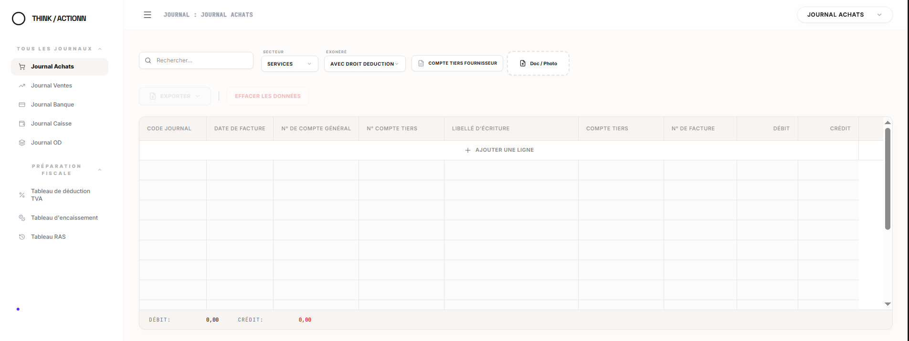
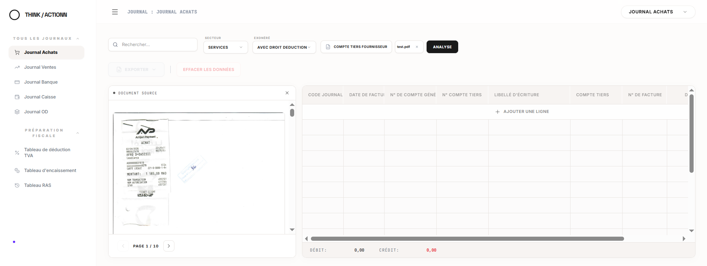

Comment ça marche
Du fichier de factures aux écritures et aux tableaux TVA.
Vous donnez le contexte de l’entreprise et vos documents. Owl prépare les écritures comptables et, quand c’est nécessaire, les tableaux TVA. Vous contrôlez avant tout export.
01
Configurer le contexte de l’entreprise
Owl n’analyse jamais une facture indépendamment de l’entreprise qui la reçoit.
- Secteur : l’activité de l’entreprise
- Statut TVA : avec ou sans droit à déduction
- Fournisseurs : leurs comptes tiers
- Fournisseurs soumis à la RAS : ceux pour qui une retenue à la source s’applique

02
Importer les documents
Un fichier qui regroupe plusieurs factures, ou des photos, chargé via « Doc / Photo ».
- Toute la période en une fois, mensuelle ou trimestrielle
- Le document source reste affiché, page par page

03
Owl analyse les documents
Au clic sur « Analyse », Owl lit chaque pièce du fichier.
Ce qu’Owl relève sur chaque pièce
- Le fournisseur et la nature de l’opération
- La date et le numéro de facture
- Les montants HT, TVA et TTC
- La devise, le cas échéant
04
Owl applique le contexte de l’entreprise
C’est ici qu’Owl dépasse l’OCR : les données de la pièce sont croisées avec ce que vous avez configuré.
Données de la facture
Activité de l’entreprise
Statut TVA
Fournisseur et RAS
05
Les écritures comptables sont préparées
Le ticket de l’étape 2 devient une écriture complète dans le journal.
06
Les tableaux TVA sont préparés, si nécessaire
La préparation TVA s’appuie sur le même contexte et sur vos documents comptables. Elle produit trois tableaux.
- Tableau de déduction
- Tableau RAS
- Tableau d’encaissement
07
Vous contrôlez les résultats
Rien ne part sans vous. Chaque ligne se relit à côté du document dont elle vient.
- Vérifier les comptes et les montants
- Modifier une ligne ou en ajouter une
- Effacer les données d’un journal et recommencer
08
Vous exportez
Les résultats contrôlés partent vers votre logiciel comptable. Votre façon de travailler ne change pas.
- Sage 100
- Odoo
- SAP
- JBS
- QuickBooks
- Rillet
Voir la préparation des écritures en mouvement.
La démonstration rejoue le parcours dans l’interface d’Owl.